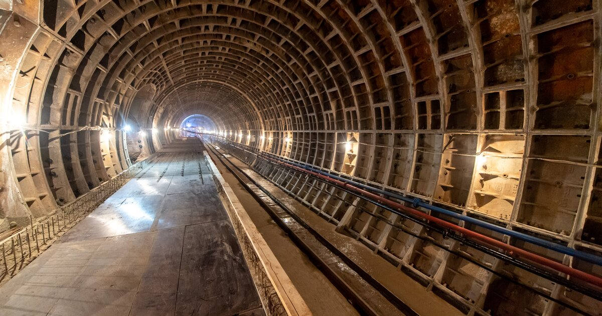
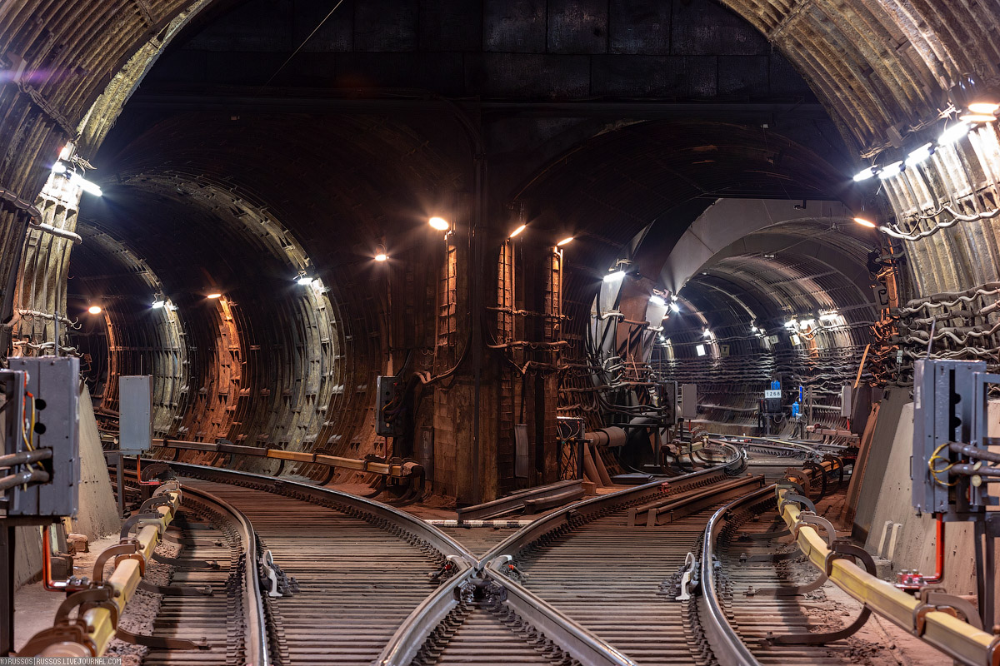

90 ЛЕТ ИМПОРТА И ЭКСПОРТА СЫРЬЕВЫХ ТОВАРОВ

90 ЛЕТ ИМПОРТА И ЭКСПОРТА СЫРЬЕВЫХ ТОВАРОВ
Всего АО «ВО «Машиноимпорт» реализовало более 200 проектов в 28 странах мира, к ним относятся проекты:
Сооружения газопроводов Хасси-Рмель-Арзев, Тин Фуйе-Хасси-Месаунд, Альрар-Тин Фуйе (стоимость проекта свыше 412 миллионов долларов США)
Бурение эксплуатационных скважин на месторождении Северный Афганистан (стоимость проекта свыше 19 миллионов долларов США)
Поставка буровых установок для «Баукема экспорт-импорт», разработка газового месторождения Зальцведень-Пеккензен, Германия (стоимость проекта свыше 31 миллиона долларов США)
Строительство газопровода Марса-Эль-Брега-Мисурата, строительство компрессорной станции и других сооружений газопровода (стоимость проекта свыше 1 миллиона долларов США)
Сооружение подводного перехода через реку Дунай газопровода СССР-НРБ, строительство морского трубопровода на шельфе Румынии (стоимость проекта свыше 23 миллионов долларов США)
Сооружение нефтебаз в городах Меланже и Порту-Амбоин, Ангола (стоимость проекта свыше 26 миллионов долларов США)
Поисковые геологоразведочные работы на нефть и газ на континентальном шельфе в Болгарии (стоимость проекта свыше 44 миллионов долларов США)
Нефтегазовые проекты:
СООРУЖЕНИЕ ГАЗОПРОВОДА СССР-НРБ
Строительство транзитного газопровода для подачи природного газа из России в Турцию, Грецию и Югославию
Строительство транзитного газопровода для подачи природного газа из России в Болгарию (стоимость проекта свыше 377 миллионов долларов США, 1985-1993 гг.)
ГАЗОПРОВОД КУЛАТА-АФИНЫ
Строительство транзитного газопровода для подачи природного газа из России в Грецию (стоимость проекта свыше 90 миллионов долларов США, 1992-1995 гг.)
СООРУЖЕНИЕ ГАЗОПРОВОДА КУУВОЛА-ТАМПЕРЕ-ХЕЛЬСИНКИ, КЕРАВА-СКОЛДВИК
Строительство газопровода в Финляндии (стоимость проекта свыше 48 миллионов долларов США, 1986 г.)
БУРОВЫЕ РАБОТЫ НА СКВАЖИНЕ БОДРА В ЗАПАДНОЙ БЕНГАЛИИ
В бассейнах Камбей и Кавери, сейсморазведочные работы в бассейнах Камбей и Кавери, Индия (стоимость проекта свыше 213 миллионов долларов США, 1984-1996 гг.)
УЧАСТИЕ В МОДЕРНИЗАЦИИ АНТИПИНСКОГО НЕФТЕПЕРЕРАБАТЫВАЮЩЕГО ЗАВОДА
Проекты в сфере жилищно-коммунального хозяйства:
Оборудование для сбора и переработки бытовых и промышленных отходов: линии для сортировки и брикетирования бытового мусора, линии для сортировки и переработки макулатуры, пластиковой тары, установки для утилизации медицинских и биологических отходов, мусоросжигательные заводы Оборудование для подготовки питьевой воды и обработки осадка: генераторы озона, фильтро-прессы
Оборудование для ремонта и уборки автомагистралей, улиц, тоннелей, мостовых конструкций: дорожно-уборочные машины, деформационные швы, заводы для производства асфальта
Оборудование для крематориев
Проекты в сфере городского строительства:
Поставка оборудования, конструкций и материалов для Мемориального комплекса Победы на Поклонной горе
Поставка оборудования для МКАД, Третьего транспортного кольца
Поставка оборудования для Лефортовского, Серебряноборского и Гагаринского тоннелей
Проекты в сфере транспорта:
Поставка оборудования для вагонов легкого метро и восстановления геометрии профиля рельса
Поставка лифтового, эскалаторного, технологического оборудования на строящихся станциях и электродепо Московского метрополитена